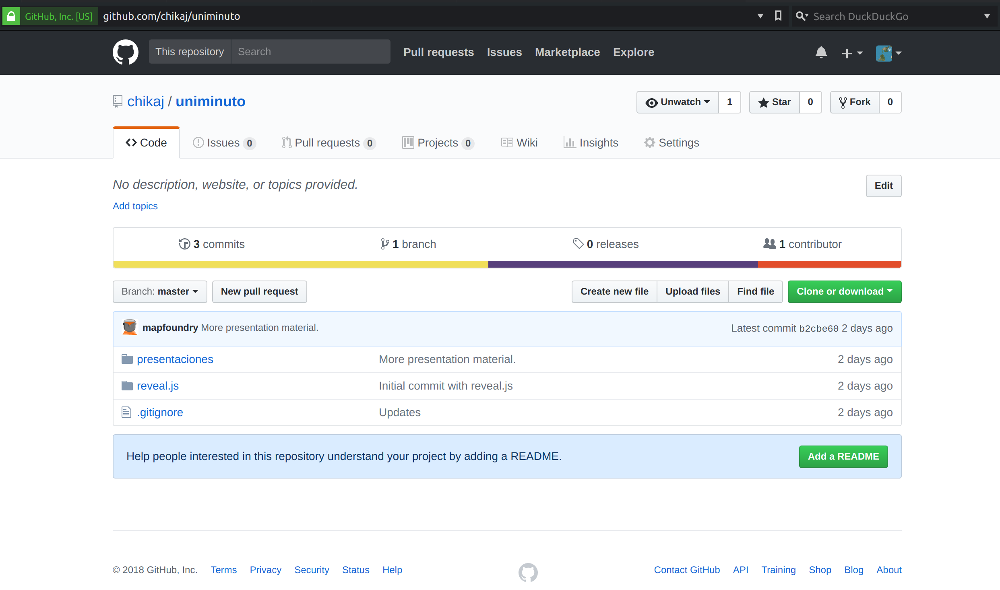
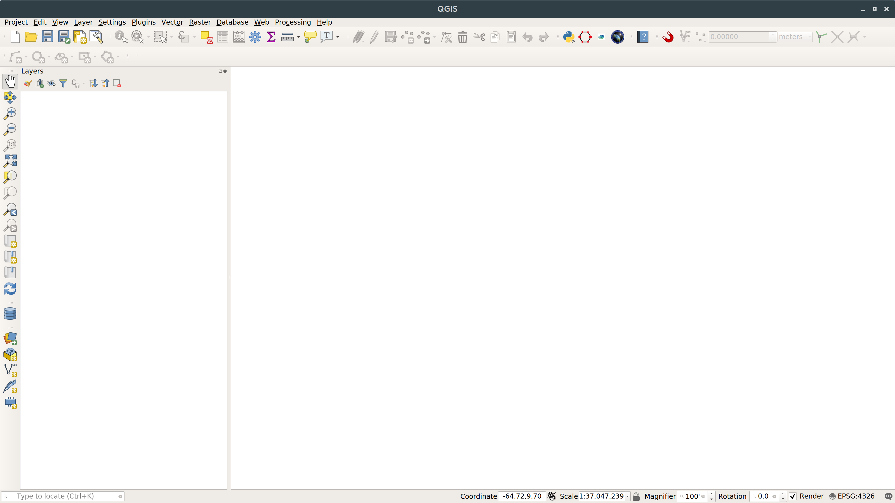

Sistemas de información geográfica
Una introducción con software libre
Nate Currit, Departamento de Geografía en Texas State University
¿Quien soy?
Dr. Nate Currit
Brigham Young University: BS, MS
The Pennsylvania State University: PhD
Texas State University: Profesor de Geografía, 13 años
¿Qué enseño?
Sistemas de Información Geografíca
Percepción Remota
Bases de datos espaciales
Problemas ambientales en la frontera México-Estados Unidos
Seminario sobre la socio-ecología
¿Qué investigo?
Cambios del uso del suelo
Problemas de escala espacial
Aprendizaje de maquina (Inteligencia artificial)
...con un enfoque en el oeste del EEUU y México...
...y (de nuevo) Guatemala
...y tal vez Colombia!
Texas State University
{La universidad estatal de Tejas}
¿Quienes son ustedes?
Presentaciones y datos
https://github.com/chikaj/uniminuto Horario de talleres
Lunes: Introducción
Martes: Analisís vectoral
Miercoles: Analisís de raster
Jueves: Interpolación espacial
Viernes: Percepción Remota
Horario hoy
> QGIS
> Razonamiento geoespacial
> ¿Qué es SIG?
> Aplicaciones de SIG
> Más QGIS
QGIS
https://http://qgis.com Razonamiento geoespacial
Patrones Geoespaciales
- Distancia
- Absoluta
- Relativa
- Dirección
- Estructura
- Orientación
- Escala
Patrones Geoespaciales
Regular
Regular
Regular
Patrones Geoespaciales
MAUP

Topología
- Proximidad
- Conectividad
- Contención
Procesos Geoespaciales
fotos de ISS--¿qué son?
cómo interpretamos
Sistema de Información Geogáfica
- Sistema
- Información
- Geográfica
Miscelaneo
https://geoportal.dane.gov.co/v2/http://www.esri.com
http://www.qgis.com
http://www.naturalearth.com
https://wiki.openstreetmap.org/wiki/Tile_servers